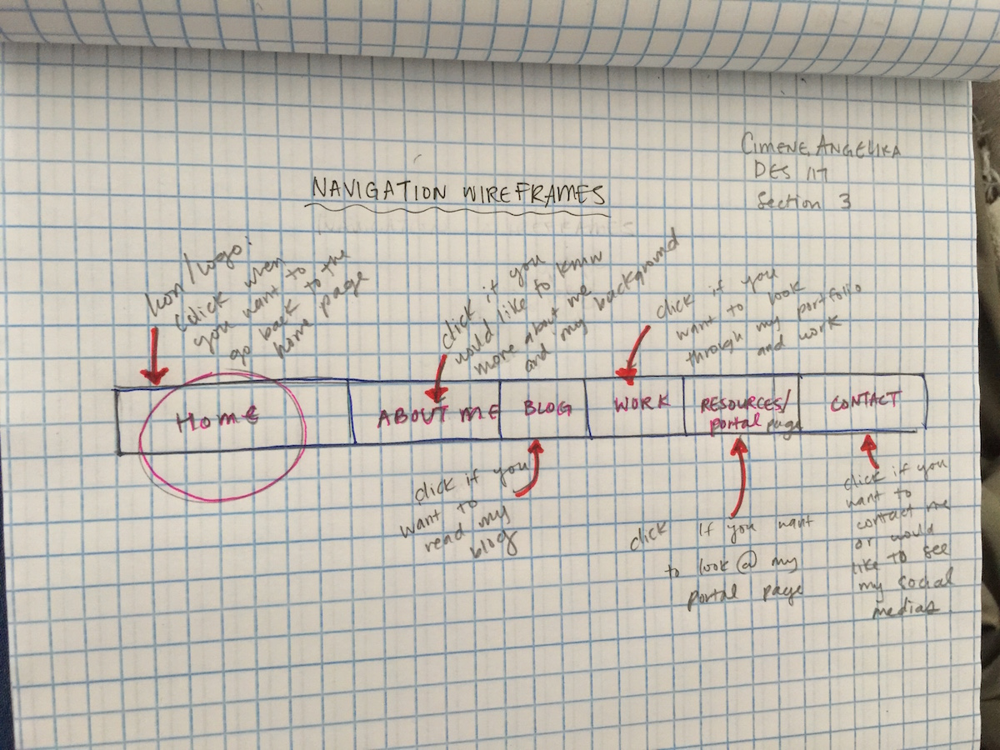

Portfolio Design Process
The first part of my design process for my portfolio page is research. I think that part is one of the most critical aspects of the process because I have to look at different types of portfolio pages and see which parts of their websites are successful and effective. During this research, I took the opportunity to analyze the fundamentals of creating a well-designed website that’s elegant and striking at the same time. After I did my research, I had to create a rough sketch of the layout of my portfolio and wireframes of my navigation. For the rough sketch, I didn’t really know the direction I was heading. I just put design patterns that many of the portfolio websites have such as a navigation tool horizontal at the top, the large header image, and the content follows below. For the navigation wireframe, I wanted to put important links. The main links I created was a home link, my work, an about me, my blog, portal page, and how to contact me. For the navigation, I’m contemplating whether to put a FAQ link or putting a FAQ link under my about me page if the viewer has any more questions.
The next step of the process was creating a color scheme. I found this part to be extremely challenging because I could not get the right colors. I wanted something bright and bold but there wasn’t enough contrast in the values. This took me hours to find a consistent and interesting color scheme. For this process, I searched through Adobe Colors and explored the many themes that people created. After pages and pages of color schemes, I found one that I liked. The goal for my color scheme is to get a palette that corresponds with my content. Many pieces of my work are vibrant, colorful, and bold, so I need colors that enhance it and not compete with it.
The third step was choosing the content to put in my website. This was really fun because I was able to look through all my past work and projects and just gave me a lot of nostalgia. I have so much pieces that I want to put but I didn’t want to put too much. For this, I chose what I thought were some of my highlights throughout the past two years of being a design major. The process of choosing my content is to choose the ones that truly represent my artistic and design style. Since it is a portfolio website, I want to show my audiences my strengths in terms of design and art. I enjoy complexity and detail, so I chose pieces that represent that.
The fourth step of my process is creating a design composition in Illustrator. For this part, I looked at many portfolio websites to inspire me. There was one website that I particularly like, which was Sean Halpin’s website,I thought this website was extremely well made because his whole website was filled with his work. The artistic style he created was inspiring and how he designed his layout is extremely effective. For my design composition, I tried this approach. His website is filled with bright colors and his color palette works well with each other. For my font choices, I chose EB Garamond and Arial together because those two typefaces complement each other. After receiving the feedback, I’m planning to change my typefaces because many people had a hard time reading my content. I’m still considering which typeface to choose, but I’m going to choose a san-serif font rather than a serif font because the style corresponds more with my work than a san-serif font. Based on all the feedback I got, I received many positive responses with my color palette and how striking my design composition is. Many issues people had with my portfolio website is the lack of legibility. There’s a lack of contrast between the words and the color, so I’m going to lighten my backgrounds and darken my letters. Another issue was my navigation. It seemed out of place in comparison to my whole portfolio. There are also spacing issues such not giving enough breathing room for my pieces. I plan to add more space to my portfolio page and make it less overwhelming.
The fourth step of my portfolio process was a second iteration of my design comp. Based on the critiques, one of the main issues I had in my portfolio website is that it lacks readability. In order to fix this, I had to make my text larger and change my font to a san-serif font. I also added more contrast between the background and the text so the viewer will be able to read it clearly. One of the main goal of this second iteration is to focusing on spacing, such how the posts and images look next to each other. Another part I changed was my work page. I created a more clear and legible layout for my work pages. To make it more interesting, I turned the posts into circles. The reason Why I did this is because I wanted to add more space between the images so they don’t compete with each other and I didn’t like how they looked as rectangles with added spaces. For my heading fonts, I decided to choose a header that is in Google Fonts rather than just something I found online. The reason why I did this is so that it will be easier to work with than having a header image.